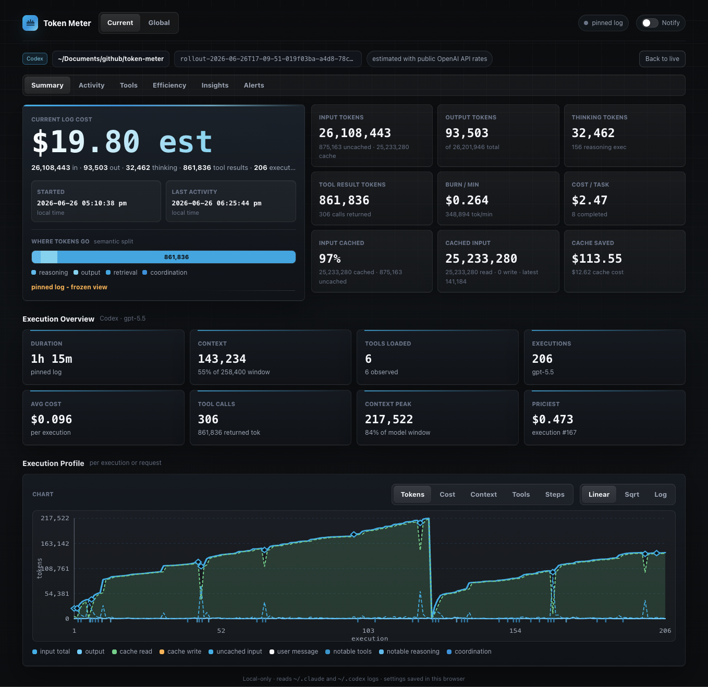
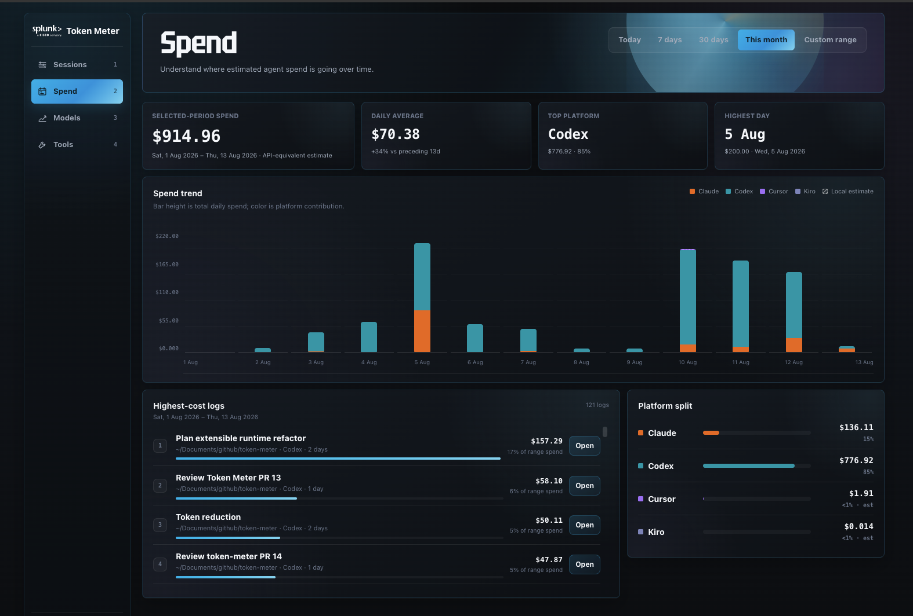
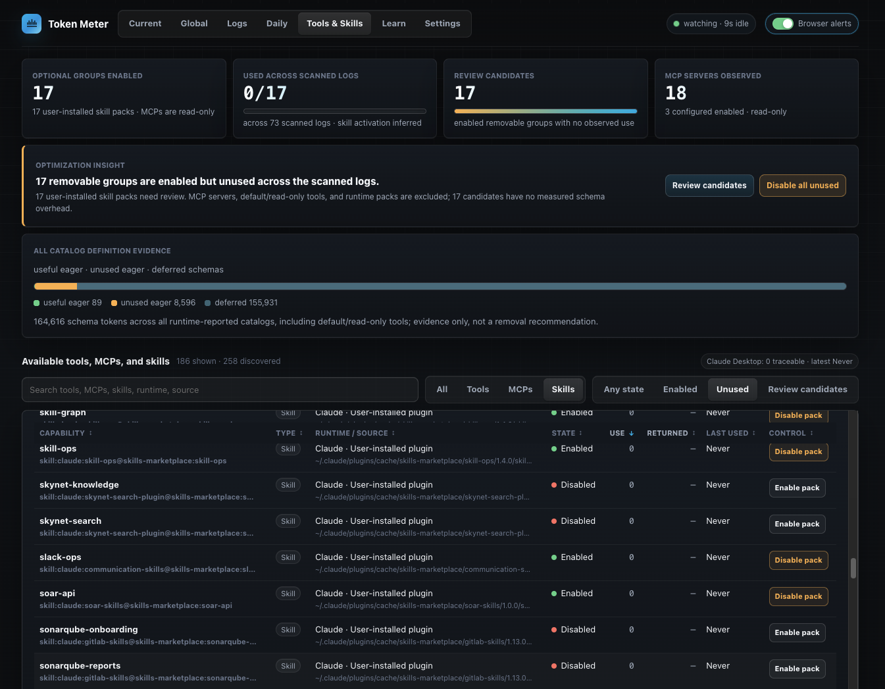

Live runs
Cost, context pressure, token shape, timing, and execution in one current-session view.
COST / CONTEXT / TIMELocal-first / Open source
See the cost, context, and execution behind every run—while the traces stay on your machine.
git clone https://github.com/splunk/token-meter.git
./token-meter/scripts/installRequires Python 3.8+ · Xcode Command Line Tools · curl
git clone https://github.com/splunk/token-meter.git
./token-meter/scripts/installRequires Python 3.8+ · systemd user services · GTK 3 · PyGObject · Ayatana AppIndicator · curl
GNOME may also need an AppIndicator/KStatusNotifierItem extension.
powershell.exe -NoLogo -NoProfile -ExecutionPolicy Bypass -Command '$p=Join-Path $env:TEMP "token-meter-bootstrap.ps1"; try { Invoke-WebRequest -UseBasicParsing "https://raw.githubusercontent.com/splunk/token-meter/main/scripts/bootstrap-windows.ps1" -OutFile $p; & $p } finally { Remove-Item -LiteralPath $p -Force -ErrorAction SilentlyContinue }'Requires Windows PowerShell · WinGet (Microsoft App Installer)
Beta The Windows extension is in beta.
http://127.0.0.1:8722
No administrator access required.
01 / Product signal
Read the cost. See the work.
Live runs and historical patterns stay connected to the evidence behind them. Costs and selected token values can be estimates; coverage stays visible.



This is the companion rebuilt for the web—not a screenshot. The native hierarchy stays intact while the presentation responds to the page.
02 / Signal ledger
Not another score. A legible record for deciding when to continue, intervene, or investigate.
Cost, context pressure, token shape, timing, and execution in one current-session view.
COST / CONTEXT / TIMECompare sessions, runtimes, projects, and calendar days without flattening missing evidence into zero.
RUN / DAY / PROJECTInspect output per covered dollar, reasoning ratio, and context load with coverage beside the result.
OUTPUT / COVERED $Understand tool calls, failures, repeats, and skill evidence without publishing the work itself.
TOOLS / REPEATS / SKILLS03 / Efficiency field
Compare four signals across covered, comparable work. Token Meter keeps the limits attached, so a missing value never becomes a score.
How Token Meter reads efficiencyReported output tokens per covered dollar. Higher across comparable work means more response output for the covered spend.
Reported reasoning tokens as a share of output. Lower or stable is usually better for comparable work; difficult work may need more.
Processed input tokens per output token. Lower means less context carried into each response.
Output tokens per token-covered run. Higher generally points to a less fragmented workflow.
Read movement over time, not a single grade.
Unavailable evidence stays unavailable.
Costs and selected token values can be estimates.
04 / Local boundary
Token Meter reads supported local stores and serves the dashboard on 127.0.0.1. It is not a hosted analytics service.
Supported local traces and databases are read, never rewritten.
No prompt or response content appears in the dashboard, native companion, or bounded MCP projections.
No API keys for trace analysis. No Token Meter analytics or telemetry leaves your machine.
05 / Start measuring
Make it useful. Keep it local.
Install Token Meter